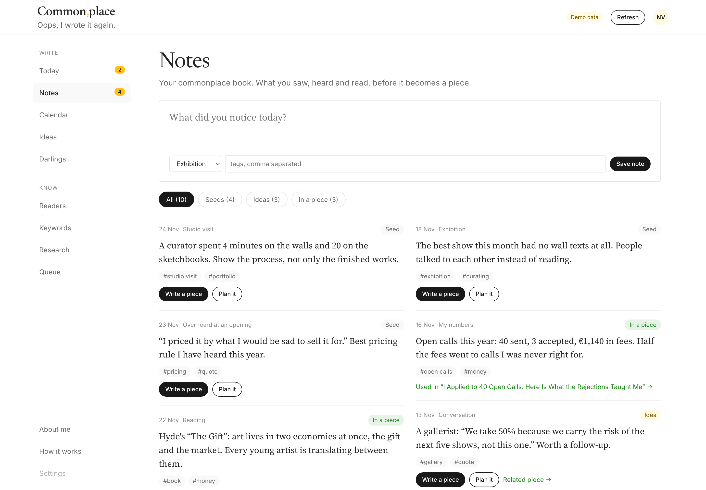
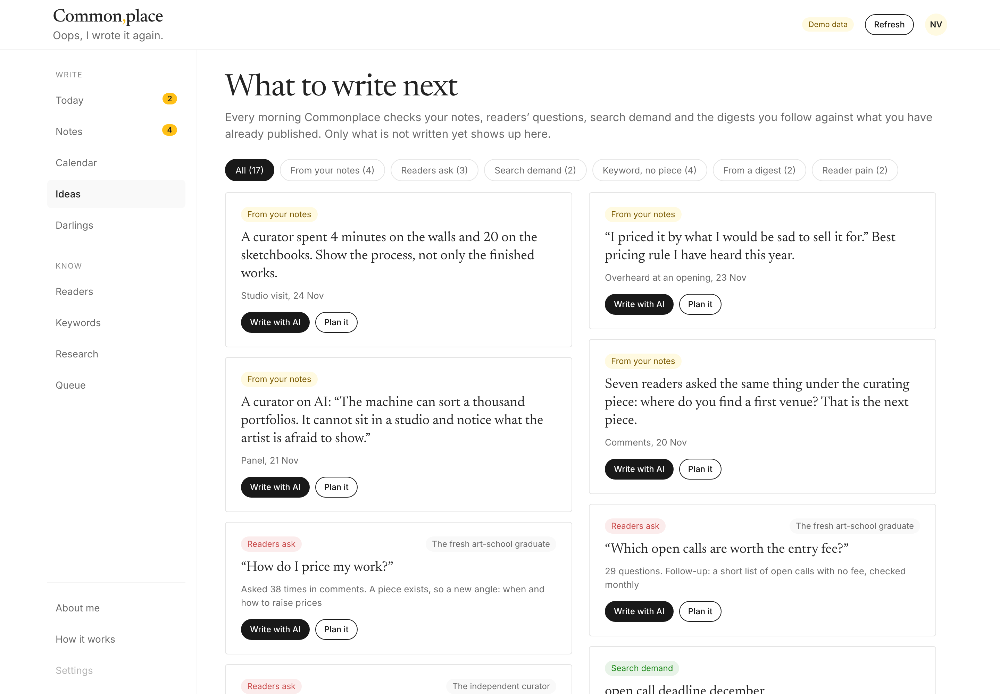
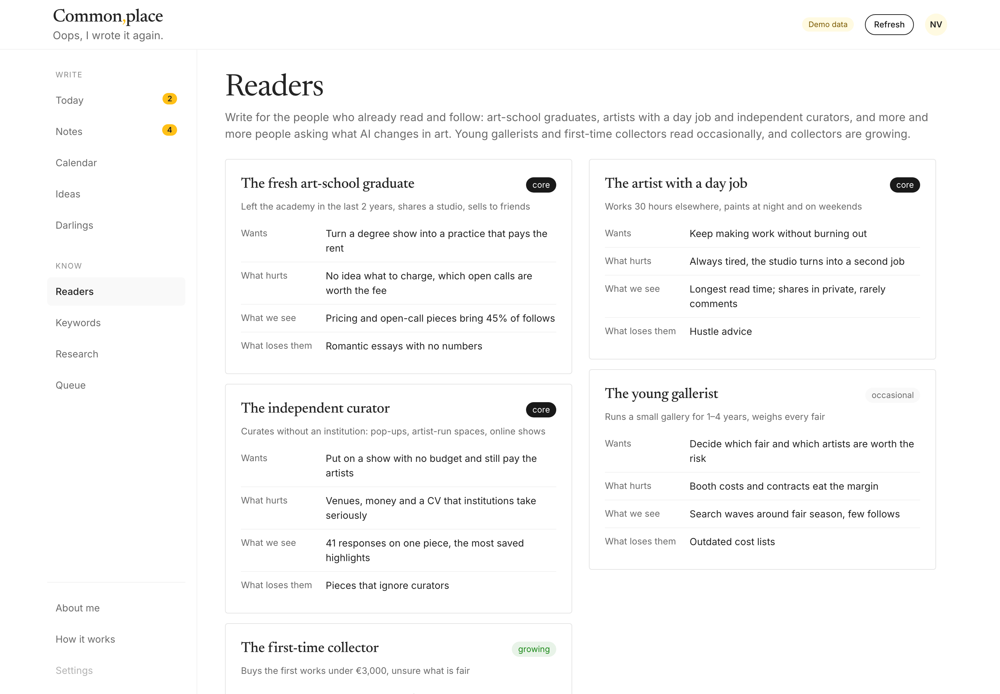
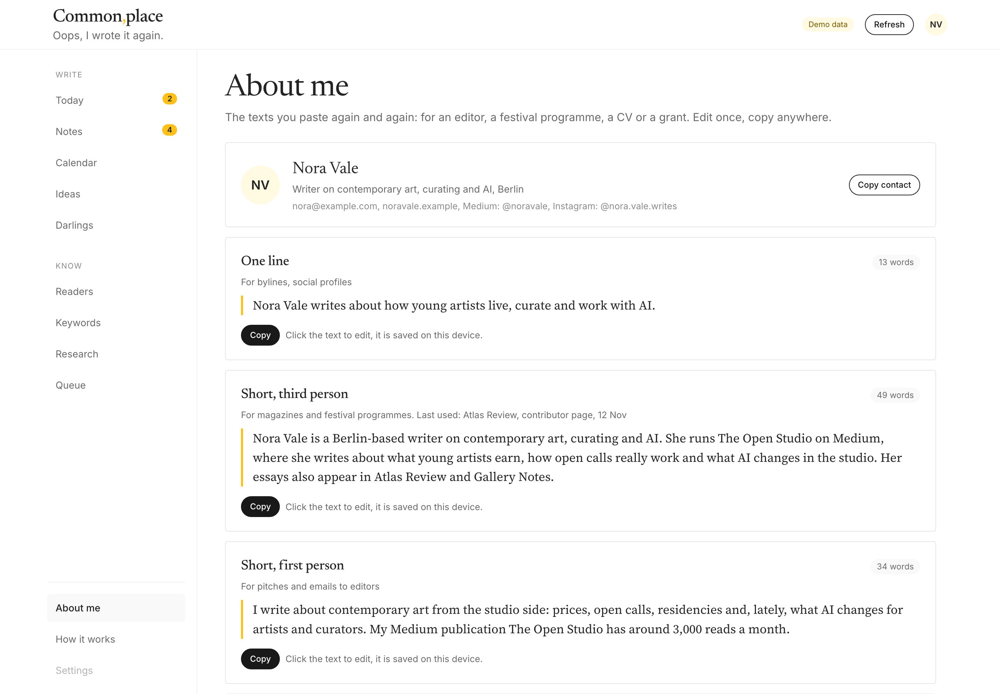
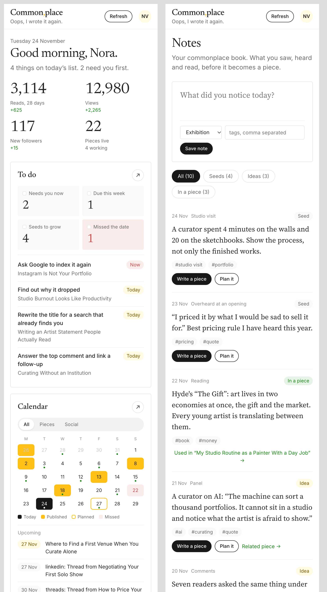

A workspace for writers who publish in several digital outlets. It keeps the notes a writer collects, shows which published pieces are still alive, suggests what to write next from evidence, and holds the short texts about yourself that you paste again and again.
Role
Product and UX design, prototype
Built with
AI-assisted coding (Claude Code)
Platform
Web app, desktop and phone
Status
Personal tool, demo on invented data
01 Where it comes from
I built it for my own writing work first
I write long articles for a website every week. My morning used to start in several places: site analytics, Google Search Console, a content calendar, research files and my notes. Before I knew what needed me, a good part of the morning was gone.
So I built myself one screen for the morning, with an automatic data pull behind it. It worked, and I kept adding to it: a calendar, a pain map of my readers, a list of ideas checked against what I had already published.
This case shows the same product turned into a general tool for any writer. The writer, Nora Vale, and every number, note and quote in the demo are invented. The flow and the screens are the ones I use.
The writer does not lack data. She lacks one place that says what the data means this morning.
02 Who it is for
Nora writes about art, curating and AI
She runs a publication on Medium and contributes to two digital magazines. Her readers are young artists, artists with a day job and independent curators, and more and more people who ask what AI changes in art. She writes three or four pieces a month next to curating and teaching.
Jobs to be done
When I start the day
I want to see what needs me first, so I do not open several tabs before I write a line.
When I notice something at a show or a studio visit
I want to keep it in one place, so it can grow into a piece later.
When I choose the next topic
I want evidence that readers ask for it and that I have not written it already.
When I look back
I want to know which pieces still live and which to let go, without opening every stats page.
When an editor or a festival asks who I am
I want the right bio in the right length in one click.
When a planned piece slips
I want the calendar to tell me honestly, not to keep pretending it is on track.
03 The flow
From a note to a piece, and back
The loop has eight steps. Five of them are hers, one belongs to AI, and two run on their own every morning. Measuring closes the loop: what readers ask in the comments comes back as notes and ideas.
Her stepAIRuns on its own every morning
04 The screens
Seven screens, one morning
TaskAnswer “what needs me first” before she opens anything else.DecisionA greeting with a count, her latest note as a quote, four numbers, two weeks of calendar, then three lists: today, needs attention, taking off.WhyThe note on top reminds her she is a writer first; the numbers come second.

TaskKeep what she notices before it is lost.DecisionOne field, a source (exhibition, studio visit, overheard, reading, comments) and tags. Every note is a seed, an idea or already in a piece, and can become a plan or a brief in one tap.WhyA commonplace book is how writers have kept material for centuries. The product is named after it.

TaskChoose the next topic with evidence, not mood.DecisionIdeas come from five sources: her notes, readers’ questions, search demand, keywords with no piece yet and the digests she follows. Each is checked against what she has published, so nothing duplicates.WhyA second piece on a topic that already has one is easy to write by accident.
TaskSee what went out, what is planned and what slipped.DecisionPublished pieces and social posts are picked up automatically; plans are hers. A plan that missed its date turns red with one action: move it.WhyIn my own content calendar many statuses were stale, because a person had to update them. Facts should come from where the piece actually lives.
TaskKnow which pieces live and which to let go.DecisionEvery piece sits in one group: working, growing, waved and faded, let it go?, new. Each card shows reads, views, read ratio, Google position, read time, followers and earnings, with twelve weeks of views.Why“Kill your darlings” is writers’ advice. The question mark is deliberate: the data suggests, she decides.

TaskWrite for people, not for keywords.DecisionFive reader types with what they want, what hurts and what loses them, the questions they ask most, and a pain map with sources.WhyKeyword tools were nearly blind for my niche: one of them showed volume for 7 searches out of 931. Readers’ own questions filled the gap.

TaskSend the right bio in seconds.DecisionOne line, short third person, short first person, CV line, speaker intro. Word count, where it was last used, edit in place, copy.WhyEvery editor, festival and grant asks for a bio in a different length, and it always lives in an old email.
On the phone
The same morning in a browser on the phone: the side panel becomes a bottom bar with the five daily tabs.

05 Decisions
What shaped it
Speak the writer’s language
Commonplace, Darlings, seeds, pieces. The product borrows words writers already use instead of dashboard words.
Look like the place she writes
A Medium-like visual language: serif headlines, plain sans for the tools, black pill buttons, one yellow accent. The tool should feel like the desk next to the page.
Facts from the source
What was published and when comes from the outlet itself, not from a status someone forgot to update.
The human decides
AI drafts a brief and checks facts, but publishing and letting a piece go are always her call.
Quiet by default
One accent colour, red only for what missed a date or fell out of the index, green only for what grows.
Work on top, me at the bottom
The side panel keeps daily tools on top and the personal things (about me, settings) at the bottom, so the morning list stays short.
06 Under the hood
A morning robot does the boring part
Every morning a scheduled job collects stats, search data, the calendar and the digests she follows, and recalculates groups, alerts and ideas.
The app is a static page: it reads one data file, so it opens fast on a phone and can move to any server.
Briefs for AI carry the rules she writes by: check for duplicates, verify every number against a primary source, plain language, stop after the outline.
The demo runs on invented data generated by a script, with the same structure as the real one.
07 Outcome and next
The morning is one screen now
The real version already collects my data every morning on its own and shows the day on one screen, with a calendar that marks slipped pieces instead of pretending they are on track. I keep testing it on my own work and fix what gets in the way.
Next: social posts cut from each piece, a pitch tracker for editors, and a weekly review that suggests one darling to refresh and one to let go.